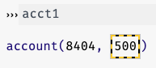

12.1 Mutating Structures
We will now study a new kind of data and the programming style that accompanies it. This will give us both great power and great responsibility. We will develop this idea in both Pyret and Python, both because the core concept arises in both (indeed in nearly all) languages and because their contrast is instructive.
12.1.1 Example: Bank Accounts
Imagine that we want to represent bank accounts, where each account has a (unique) id number and a balance:
Python | Pyret |
| |
Let’s now make an account:
Python | Pyret |
| |
Now let’s say we learn that the account has just earned another 200. We could always reflect the resulting account as follows:
Python | |
| |
Pyret | |
|
However, this creates a new account; if we look at the current
balance
of
acct1,
by writing
acct1.balance,
it is still
500.
If this were our account, we would be quite sad!
Rather, we want to change the balance in the existing account. This requires a programming feature that we have not encountered until now: data that can be changed. Such data are called mutable, and we explore them below. In contrast, until now we have worked with immutable data: data that cannot be altered.
First, we have to declare that the data can be changed. In Python, this is automatically true, always, so nothing changes. In Pyret, however, fields cannot be changed—they are immutable—by default. We have to explicitly say they can be changed:
Python | Pyret |
| |
This Pyret definition says that
id
cannot be changed, while
balance
can. This ensures that no programmer can accidentally change the bank
account number. In Python, every programmer has to make sure they don’t
accidentally change it. (If we did want
id
to be mutable in Pyret, we would add a
ref
in front of it, too.)
With this definition, making accounts looks the same (unsurprisingly in Python, since nothing has changed):
Python | Pyret |
| |
When we view the account in Pyret, we see something special:

The yellow-and-black “caution tape” indicator is a reminder that the value can change, so what is shown on screen may not be the current value.
Accessing an immutable field in Pyret remains the same:
Python | Pyret |
| |
However, accessing a mutable field looks different in Pyret:
Python | Pyret |
| |
The
!
is there to remind that what you are getting is the current value of
balance,
and it may be different later. Python does not offer a similar syntactic
warning, but then again, recall that every field is always mutable.
So now let’s see how to change that account balance. For simplicity, let’s first see how to set the account balance to zero. We use slightly different syntaxes for it in the two languages:
Python | Pyret |
|
|
In Pyret, again, we use
!
in the syntax for changing the field: read it as “change the value
now!”
Do Now!
You now know all the parts you need to figure out how to set
balanceto be200more than its previous value. Can you figure out how to write that?
Here’s how we combine the pieces—accessing the value and then setting it:
Python | |
| |
Pyret | |
|
While Pyret’s syntax is a little more onerous for changing the value
of one field, it proves to be ligher-weight if we want to change
multiple fields. In Python we’d have to write
acct1.
for each of them, whereas in Pyret we need only the one
acct1!.
So there is a trade-off between the two syntaxes.
We hadn’t written any tests above. Suppose we had: already we might notice something a bit odd. Say we had written
Python | Pyret |
| |
This would pass before we performed the update, but fails after the update is performed. In Python, tests are run when we call the testing functions, which we typically do after loading the full file (either by running them at the prompt or by putting our tests in a separate file).
In Pyret, tests are run as if they were written at the very bottom of definitions. Therefore, even if the program looked like this in Pyret:
acct1 = account(8404, 500)
check:
acct1!balance is 500
end
acct1!{balance: acct1!balance + 200}the test fails. Alternatively, we can write
acct1 = account(8404, 500)
check:
acct1!balance is 700
end
acct1!{balance: acct1!balance + 200}and it passes, but not if we comment out the update.
In both languages, then, we see a new phenomenon: tests that are only
sometimes true. This phenomenon is called state. There is a “state” (a
collection of values for the defined names) in which the balance is
500,
and another where it is
700.
This is not merely limited to testing! Testing is just a reflection of
what is going on in the program as it runs. From now on, every
programming instruction will run in some state, and its actions will
depend on the other values in that state. If those values change, the
same instruction—i.e., the same piece of program text—may produce
different answers. This makes programming much harder, and we will have
to get used to the subtleties that come along with it.
12.1.2 Testing Functions that Mutate Structures
Our example of adding funds to an account corresponds to making a
deposit into a bank account. Let’s turn our balance-updating expression
into a function (named
deposit)
that takes the deposit amount as input. Then, we’ll look at how to write
tests for that function. First, the function definition:
Python | |
| |
Pyret | |
|
How do we test this?
In Python, this function does not return anything. In Pyret, the update operation does return the value being updated, but in a larger function we can’t always assume that it will be the value returned. Therefore, we have to set up our test to assume otherwise.
In general, tests for functions that contain mutation need to have three to four parts:
- Setup: set up the necessary values to provide the function.
- Call: call the function.
- Check: check that the function had the desired behavior.
- Teardown: restore data to their expected state.
Python | Pyret |
| |
In this case we don’t need to perform a Teardown step because we created data purely for testing the function. But if, for instance, we had run the test over a dataset whose values matter, we would need to restore the changes.
Similarly, the Setup phase needs to make sure that all data have the right values. Until now, once created, data did not change. But now, data may have been changed by some other mutations, and this may cause tests to fail. Therefore, the Setup phase requires not only creating necessary data but also setting the values of previously-created data to be what the test expects. (Again, note that in Python it is difficult to know which fields might have been changed, whereas in Pyret, we only have to reset the value of mutable fields.)
Exercise
Write tests for the following function that adds interest to an account balance:
Python
def add_interest(ac: Account): '''increases the account value by 2 percent''' ac.balance = ac.balance * 1.02Pyret
fun add-interest(ac :: Account): doc: "increases the account value by 2 percent" ac!{balance: ac!balance * 1.02} end
12.1.3 Aliasing
Now let’s suppose our bank allows accounts to be shared by multiple customers. We should thus separate information about customers from that of the account:
Python | Pyret |
| |
Specifically, suppose we have two accounts
(acct1
and
acct2),
where
acct1
is owned jointly by Elena and Jorge:
Python | Pyret |
| |
Now let’s say Elena earns an additional
150.
We want to update the account to reflect this. How might we do it? First
we have to access the account itself:
elena.acct
(in both languages). Then we would update it using the syntax above:
Python | Pyret |
| |
Sure enough, Elena’s account will now have the value of
850
(the original
500,
the bonus of
200,
and now the extra
150):
Python | |
| |
Pyret | |
|
Observe that in Pyret we use
.
to get the account but
!
to get the balance: a reminder that Elena’s account will never change
(the way we have defined the data structure), but that account’s balance
may and, indeed, does. Between the designs of Python and Pyret, there’s
a trade-off between convenience and precision.
The key question now is: what is Jorge’s balance? Put differently, will this test pass or fail?
Python | |
| |
Pyret | |
|
Or even more simply: what is the value of this program?
Python | Pyret |
| |
There are two very reasonable answers here:
- Going by our prose, Jorge’s account should also have
850, because that’s what it means to “share” an account. - Going by the visible code, Jorge’s account should still have
700, because the update was made throughelena.acct, notjorge.acct.
Do Now!
Run the above code and see what you get.
What you find is that the above test passes: Jorge’s account also has
850.
We say that
elena.acct
and
jorge.acct
are aliases: they are two different “names” for the exact same
datum.
This is not the first time we have had shared data. However, until
now, it hasn’t mattered that the data were aliased. But now that we have
mutation, aliases matter: the balance in
jorge.acct
has changed even though we never made an explicit change using that
name. It is as if
elena.acct
exhibited spooky action at a distance.
Again, there is a linguistic difference here. Because all fields are
mutable in Python, you have to always be on the alert for this. Because
only
ref
fields are mutable in Pyret, you can be sure that fields accessed
through
.
will never change in value over time or even if there are aliases, but
those accessed through
!
might change over time (and via aliases).
12.1.4 Structure Mutation and the Directory
Now that we have the ability to mutate the contents of data, we will
need to show and then revise our notion of directories. The directories
are essentially the same between Pyret and Python, with one exception:
we have different naming conventions in the two languages. For instance,
we write
Account(8404, 500)
in Python versus
account(8404, 500)
in Pyret. It would be annoying to write every one of these twice, with
the only difference being the capitalization. Therefore, where the only
difference is the naming, we will ignore this difference and show only
one version (in this case, the Python version); you should assume that
the exact same thing is true for Pyret, other than the
capitalization.
As a reminder, here are our initial definitions once again:
acct1 = Account(8404, 500)
acct2 = Account(8405, 325)
elena = Customer("Elena", acct1)
jorge = Customer("Jorge", acct1)Do Now!
Review the following proposal for the directory contents after running the initial definitions. Is this what you expect to see?
Directory
acct1→Account(8404, 500)acct2→Account(8404, 500)elena→Customer("Elena", acct1)jorge→Customer("Jorge", acct1)
There’s a problem with this version, namely the use of
acct1
in the values associated with
elena
and
jorge.
Remember, the values in the directory can’t refer to names in the
directory: both Pyret and Python replace names with their values when
evaluating expressions. Here is the corresponding version of the
directory that uses the value of
acct1:
Directory
acct1→Account(8404, 500)acct2→Account(8405, 325)elena→Customer("Elena", Account(8404, 500))jorge→Customer("Jorge", Account(8404, 500))
Observe that this is also what you would see if you were to evaluate the corresponding variable names.
Now, let’s add funds to Elena’s account:
Python | |
| |
Pyret | |
|
Do Now!
Show how the directory changes if you run the above code.
If we follow the code precisely, we might expect the following directory, in which only the balance in Elena’s version of the account changes.
Directory
acct1→Account(8404, 500)acct2→Account(8405, 325)elena→Customer("Elena", Account(8404, 650))jorge→Customer("Jorge", Account(8404, 500))
We know from running the code, however, that the account is aliased,
so that the balances accessible from each of
acct,
elena.acct,
and
jorge.acct
all reflect the update. This suggests that the actual directory should
look something like
Directory
acct1→Account(8404, 650)acct2→Account(8405, 325)elena→Customer("Elena", Account(8404, 650))jorge→Customer("Jorge", Account(8404, 650))
But this is also weird. The directory represents the information that
Pyret or Python maintain about your defined names and their values. What
in the directory indicates that those three balances should change, but
not the balance of
acct2)?
Put differently, what reflects the aliasing? Nothing!
The directory as we have used it up until now works fine for programs without mutation. But once we have both mutation and aliasing, this simple idea of mapping names to values breaks down because it doesn’t capture the aliases. We need a refined representation of the connections between names and values that does capture aliasing.
12.1.4.1 Introducing the Heap
Our original presentation of the directory reflected the aliases that
referred to a single
Account
through repeated use of the name
acct1.
We only lost that sharing when we replaced
acct1
with it’s value while setting up the data for Elena and Jorge. The rule
that names can’t appear in the values is still important, especially in
the presence of mutation (we’ll return to this later in Mutating Variables
in Memory). But the idea of having a single term that can be reused
to reflect sharing is a good one. Indeed, it reflects what happens
inside your computer.
Every time you use a constructor to create data, your programming environment stores it in the memory of your computer. Memory consists of a (large) number of slots. Your newly-created datum goes into one of these slots. Each slot is labeled with an address. Just as a street address refers to a specific building, a memory address refers to a specific slot where a datum is stored. Memory slots are physical entities, not conceptual ones. A computer with a 500GB hard drive has about 500 billion slots in which it can store data. Not all of that memory is available to your programming environment: your Web browser, applications, operating system, and so on all get stored in the memory. Your programming environment does get a portion of memory to use for storing its data. That portion is called the heap.
When you write a statement like
acct1 = Account(8404, 500)your programming environment puts the new
Account
into a physical slot in the heap, then associates the address of that
slot with the variable name in the directory. The name in the directory
doesn’t map to the value itself, but rather to the address that holds
the value. The address bridges between the physical storage location and
the conceptual name you want to associate with the new datum. In other
words, our directory really looks like:
Directory
acct1→ 1001
Heap
1001:
Account(8404, 500)
Our revised version has two separate areas: the directory (mapping names to addresses) and the heap (showing the values stored at the addresses). We will use four-digit numbers for addresses, prefixed with an @ symbol (reserving numbers with fewer digits for data values). The specific number for the initial address (here 1001) is arbitrary. Subsequent storage of structured data values will use the addresses in order. Let’s write out the directory and heap contents for our initial definitions of accounts in this new format, and see how it supports the aliasing that we intended.
First, we create both
acct1
and
acct2
in order as follows. Note that the
Account
associated with name
acct2
goes in address 1002.
Directory
acct1→ 1001acct2→ 1002
Heap
1001:
Account(8404, 500)1002:
Account(8404, 500)
When we run
Python | Pyret |
| |
what happens? As before, we look up what the name
acct1
refers to in the directory and substitute the result for the name in the
Customer
data. Now,
acct1
evaluates to an address, 1001. Therefore, the
Customer
value in the heap contains an address:
Directory
acct1→ 1001elena→ 1002
Heap
1001:
Account(8404, 500)1002:
Customer("Elena", 1001)
Similarly, when we run
Python | Pyret |
| |
the directory and heap look like this:
Directory
acct1→ 1001acct2→ 1002elena→ 1003jorge→ 1004
Heap
1001:
Account(8404, 500)1002:
Account(8405, 3250)1003:
Customer("Elena", 1001)1004:
Customer("Jorge", 1001)
Do Now!
Fun fact in the Web version of the book: Did you try hovering over the addresses? Try it now!
With the heap articulated separately from the directory, we now see
the relationship between the
acct
fields for the two customers and the name
acct1:
they refer to the same address, which in turn means they refer to the
same value. In contrast, the name
acct2,
which was not aliased in the original code, refers to an address that is
not referenced anywhere else. This is the heart of aliasing: that’s why
changes made through one name also affect values viewed through
another.
Do Now!
Write three distinct expressions each of which uses a different name in the directory to return the balance in account
acct1.
Do Now!
Would the following statement work to update the balance in Elena and Jorge’s shared account?
Python
elena.acct.balance = jorge.acct.balance - 50Pyret
elena.acct!{balance: jorge.acct!balance - 50}Does this seem like a good or bad way to do this computation? Why?
Do Now!
Extend the most recent directory and heap contents to reflect running the following statement:
acct3 = acct1Did you change the heap in the previous exercise? Should you have?
Three rules guide how the directory and heap are affected by running programs:
- If the code construct a new piece of structured data, put the new piece of structured data at the next address in the heap.
- If the code associates a name with a piece of structured data, the directory should map the name to the address of the datum in the heap.
- If the code modifies a field within structured data, modify the data in the heap.
In the example above, we did not alter the heap in any way; only the
directory should be modified to reflect that
acct3
and
acct1
are now aliases.
12.1.4.2 Basic Data and the Heap
The above rules don’t indicate what happens when we have basic data, such as numbers or strings, associated with names in the directory. Do those values also get addresses in the heap?
They do not. As our example with shared accounts illustrated, we need the heap so that updates to fields of shared data affect all aliases (names that refer to) those data. Basic data don’t have fields, so there is no need to put them in the heap. Here’s a concrete example:
x = 4
prof = "Dr. Kumar"The corresponding directory and heap contents would be as follows:
Directory
x→4prof→"Dr. Kumar"
Notice that this particular program puts nothing in the heap:
according to our rules above, only structured data only go into the
heap. Now assume our program also had a dataclass (Python) or datatype
(Pyret) for
Offices,
with a professor’s name and room number. Here’s another example showing
a combination of basic and structured data:
x = 4
prof = "Dr. Kumar"
office1 = Office("Dr. Lakshmi", 311)
office2 = Office(prof, 310 + x)Directory
x→4prof→"Dr. Kumar"office1→ 1005office2→ 1006
Heap
1005:
Office("Dr. Lakshmi", 311)1006:
Office("Dr. Kumar", 314)
Though specific language implementations can vary, this shows that it is sufficient to think of basic data as residing in the directory, not the heap. The whole point of structured data is that they have both their own identity and multiple components. The heap gives access to both concepts. Basic data can’t be broken down (by definition). As such, there is nothing lost by putting them only in the directory.
But what about strings? We’ve referred to them as basic data until now, but don’t they have “components”, namely the characters that make up the string? Yes, that is technically accurate. However, we are treating strings as basic data because we aren’t using operations that modify that sequence of characters. This is a subtle point, one that usually comes up later in computer science. This book will leave strings in the directory, but if you are writing programs that modify the internal characters, put them in the heap instead.